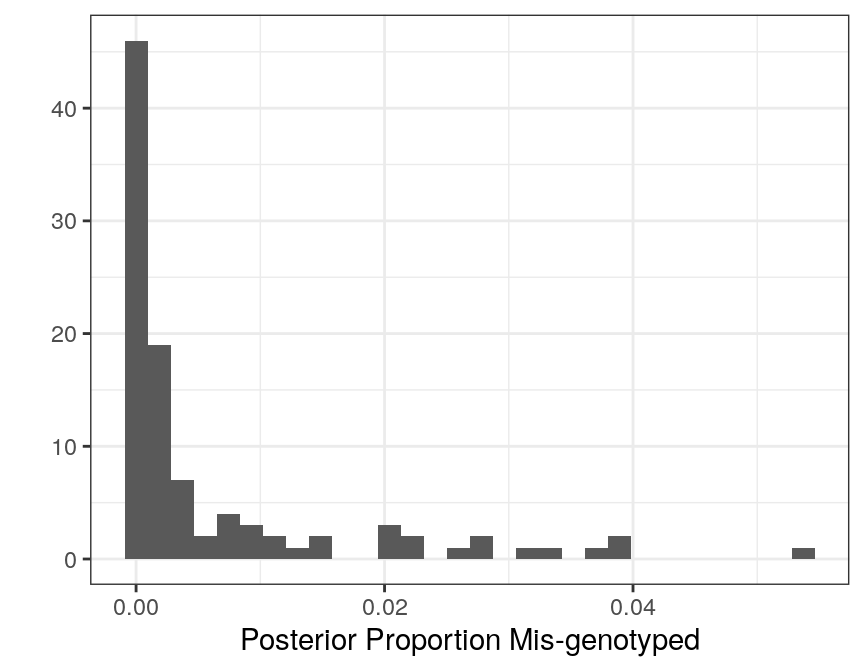

parallel_computing.RmdBefore we begin, we’ll need to load the parallel, foreach, and doParallel packages. There are other ways to perform parallel computation in R, but we find these to be pretty handy and easy to use.
Of course, we’ll need to load the updog package to actually do the genotyping.
We’ll work with the uitedewilligen dataset, which is a subset of the data from Uitdewilligen (2013).
You can read more about these data by typing ?uitdewilligen in R.
Suppose we wanted to use parallel computing to genotype this individual. Also suppose we only wanted the MAP (maximum a posteriori) estimated genotypes for each individual and each gene. Then we can use the following code.
nc <- 2 ## number of cores.
## You should change this for your specific computing environment.
cl <- parallel::makeCluster(nc)
doParallel::registerDoParallel(cl = cl)
stopifnot(foreach::getDoParWorkers() > 1) ## make sure cluster is set up.
gene_est <- foreach(i = 1:ngenes,
.combine = cbind,
.export = "flexdog") %dopar% {
## fit flexdog
fout <- flexdog(refvec = uitdewilligen$refmat[, i],
sizevec = uitdewilligen$sizemat[, i],
ploidy = uitdewilligen$ploidy,
model = "norm",
verbose = FALSE)
fout$geno
}
stopCluster(cl)Note that I used model = "norm" (Gerard and Ferrão 2019) because we have a very small number of samples.
However, this doesn’t return any sort of diagnostic statistics for each SNP. So suppose we now want to save all of the output of each SNP and not just the MAP genotype, then we can use the following code:
nc <- 2 ## number of cores.
## You should change this for your specific computing environment.
cl <- parallel::makeCluster(nc)
doParallel::registerDoParallel(cl = cl)
stopifnot(foreach::getDoParWorkers() > 1) ## make sure cluster is set up.
glist <- foreach(i = 1:ngenes,
.export = "flexdog") %dopar% {
## fit flexdog
fout <- flexdog(refvec = uitdewilligen$refmat[, i],
sizevec = uitdewilligen$sizemat[, i],
ploidy = uitdewilligen$ploidy,
model = "norm",
verbose = FALSE)
fout
}
stopCluster(cl)Returning the diagnostics for each SNP is pretty easy. For example, below we extract the variable prop_mis from the list glist and make a histogram of these values.
library(tidyverse)
prop_mis <- sapply(X = glist, FUN = function(x) x$prop_mis)
qplot(prop_mis,
xlab = "Posterior Proportion Mis-genotyped",
bins = 30) +
theme_bw()
Gerard, David, Luis Felipe Ventorim Ferrão, Antonio Augusto Franco Garcia, and Matthew Stephens. 2018. “Genotyping Polyploids from Messy Sequencing Data.” Genetics 210 (3). Genetics: 789–807. https://doi.org/10.1534/genetics.118.301468.
Gerard, David, and Luís Felipe Ventorim Ferrão. 2019. “Priors for Genotyping Polyploids.” bioRxiv. Cold Spring Harbor Laboratory. https://doi.org/10.1101/751784.
Uitdewilligen, Anne-Marie A. AND D’hoop, Jan G. A. M. L. AND Wolters. 2013. “A Next-Generation Sequencing Method for Genotyping-by-Sequencing of Highly Heterozygous Autotetraploid Potato.” PLOS ONE 8 (5). Public Library of Science: 1–14. https://doi.org/10.1371/journal.pone.0062355.